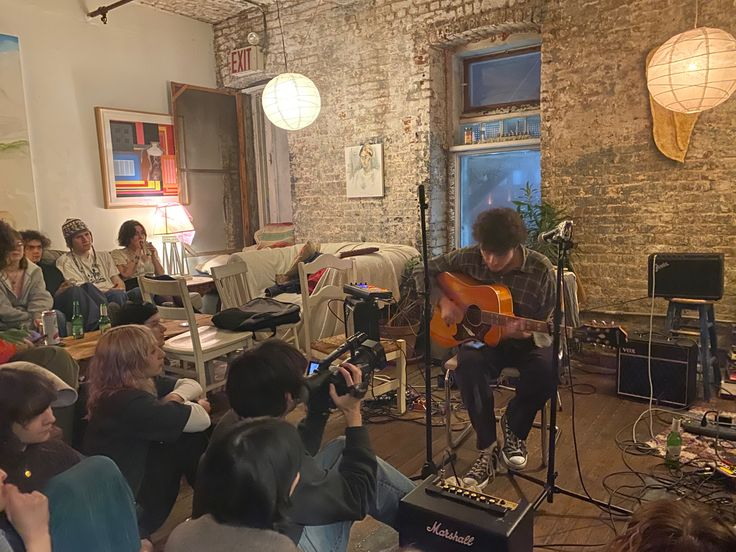

Taller de Música · Invierno
Estructura y Recorrido del Taller
Este trayecto integral reúne seis técnicas y programas específicos. Podés explorarlos en profundidad y elegir los recorridos que mejor acompañen tus intereses.
Metodología
Las clases combinan práctica y taller abierto: vas a experimentar libremente con las seis técnicas, desarrollar recursos propios y recibir acompañamiento personalizado para avanzar a tu ritmo.
Objetivos
La propuesta busca que desarrolles un lenguaje expresivo propio, incorpores recursos técnicos diversos y lleves adelante proyectos individuales o colectivos.
Beneficios
Vas a poder utilizar materiales y herramientas del Centro, compartir tus producciones en muestras comunitarias y fortalecer tu creatividad en un espacio de encuentro.
Galería del Taller
Un espacio para aprender, escuchar y crear música en comunidad.